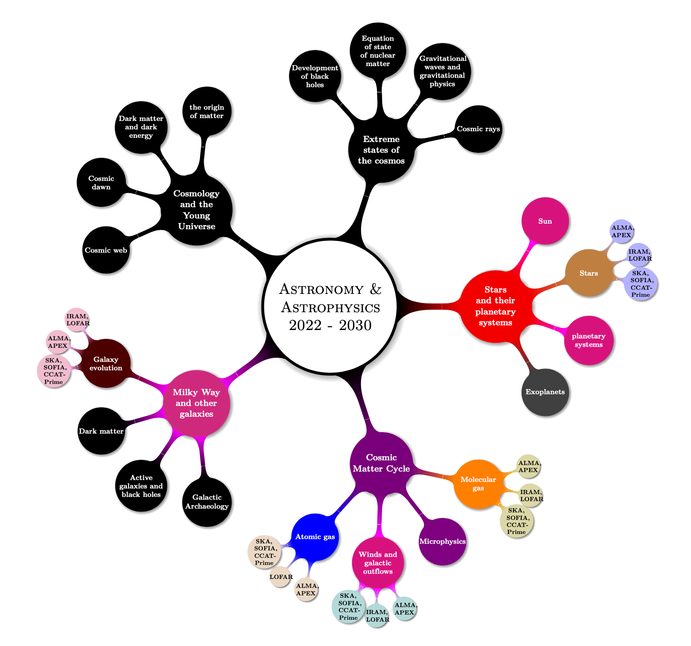

B3D Workshop
Physics 1 - University of Cologne, Cologne
Welcome
- Welcome to the B3D workshop!
- The goal for the workshop:
B3D - Big Bang to Big Data
The B3D Cluster is a planned interdisciplinary collaboration between universities, research institutions, and industry in NRW that aims to address unsolved questions in astrophysics using machine learning, artificial intelligence, and sustainable data storage technology. The cluster will focus on the analysis of large amounts of data in order to find unexpected phenomena, such as unusual galaxies or new types of stars and planets. The cluster will also develop new key technologies using data from international sources in radio astronomy, including the Square Kilometer Array. The goal of the B3D Cluster is to generate synergies between different areas of research and to provide a joint research-oriented training program in future technologies that can be applied to astronomical research and beyond.
The aim of the B3D project is to develop an interdisciplinary research, technology, and training cluster for data-intensive radio astronomy in NRW. The cluster will focus on establishing new expertise in big data and big data analytics in astronomy and astrophysics to address the challenges of the next generation of astronomical observatories. The cluster will coordinate the activities of data-intensive radio astronomy in Germany as a whole, represent it to authorities and international partners, and seek close cooperation with industry. The cluster will establish a structured graduate program and develop new algorithms and technologies in the field of green IT. The goal is to establish a “Big Data Campus” in NRW within five years.
Astrophysics research in Germany (present - 2030)

The study of the sun, stars, and their planetary systems in astrophysics.
It mentions the discovery of exoplanets, which are planets orbiting stars other than the Sun, and the importance of studying stars and their planetary systems for understanding the formation and evolution of the universe. The central questions in this field for the coming decade include understanding the processes driving the solar dynamo and solar activity cycle, the effects of turbulence, rotation, and magnetic fields on the evolution of stars, the characteristics of the remnants of stellar evolution, the structure and properties of exoplanets, and the formation and evolution of planetary systems. It also discusses the use of the sun as a prototype for the study of other stars, the importance of studying the atmospheres of exoplanets, and the search for biomarkers that could indicate the presence of life on exoplanets.
The cosmic matter cycle
The cosmic matter cycle, which is the process of star formation, stellar evolution, and the release of enriched material into the interstellar medium. This cycle is important for understanding the chemical evolution of the universe and the influence of star formation on the evolution of galaxies. The study of the cosmic matter cycle involves combining observations and modeling to understand the physical and chemical processes that occur during star formation in the interstellar medium, including the formation of molecular clouds, the distribution of stellar masses, the transport of heavy elements into intergalactic space, and the impact of feedback effects from young stars on their environment. Key questions in this field for the coming decade include understanding the role of magnetic fields and radiation in the formation of stars, the role of molecular clouds in the formation of planetary systems, the evolution of galaxies over cosmic time, and the impact of the cosmic matter cycle on the evolution of the universe as a whole.
The study of galaxies, including the Milky Way, and their role in understanding the large-scale structure of the universe.
Galaxies contain cool interstellar gas from which new stars form, and they are influenced by processes such as accretion, merger, and outflows. The appearance of galaxies is determined by these processes and by the presence of massive black holes at their centers, which drive the activity of galactic nuclei. The study of galaxy evolution involves using observatories to observe starlight and gas and dust radiation, and using 3D spectroscopy to analyze the properties of galaxies. The central questions in this field for the coming decade include understanding the evolution of galaxies over cosmic time, the formation and activity of supermassive black holes in galactic nuclei, the nature of dark matter, and the formation and evolution of the Milky Way. The section also discusses the use of the Milky Way as a reference object for other galaxies and the importance of studying the Milky Way’s structure, kinematics, chemical evolution, and dark matter content for understanding the evolution of galaxy systems.
Cosmology and the young universe
The early universe was very evenly distributed, but today it is structured into galaxies, galaxy clusters, and the cosmic web. Astronomers have developed the Standard Model of cosmology, also known as the model of cold dark matter, to explain how these structures formed. The model relies on the existence of dark matter and dark energy, which make up about 25% and 70% of the mass-energy content of the universe, respectively. However, these components have not yet been directly detected and their properties are not fully understood. The model has been successful in describing the evolution of structures in the universe, but there are still many questions to be answered about the formation of the cosmic web, the early phases of the universe, the nature of dark matter and dark energy, and the origin of matter. In the coming decade, researchers hope to make progress on these questions through various methods including the detection of dark matter particles and the detection of ionizing radiation from the first structures in the universe.
Extreme states of the cosmos, fundamental astrophysics
The cosmic matter cycle is the process of star formation, stellar evolution, and the return of enriched material to the interstellar medium. This cycle is essential for understanding the chemical evolution of the universe and the influence on the formation of planetary systems and the potential for the origin of life. The study of star formation from the interstellar medium is a central topic in modern astrophysics and requires the combination of technical observations and different areas of physics. Galaxies are the building blocks of the universe and contain cool interstellar gas from which new stars form. Processes in stars and galaxies determine the cosmic matter cycle. The Milky Way is a typical spiral galaxy and many galaxies contain a massive black hole at their center. Dark matter and dark energy, which have not yet been directly detected, are believed to play a role in the dynamics of galaxies and the expansion of the cosmos. Cosmology is the study of the evolution of the universe and the formation of structures such as galaxies and the cosmic web. Fundamental astrophysics involves the study of extreme states in the universe, including the evolution of black holes, the equation of state of nuclear matter, gravitational waves and gravitational physics, and cosmic rays. These studies can provide insight into fundamental physical laws and test them.